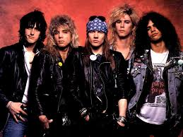

Historia de los Guns n' Roses
Guns N' Roses una banda estadounidense de rock formada en Hollywood, Los Ángeles, California
en 1985.
A día de hoy es una de las bandas más exitosas de todos los tiempos, habiendo superado los ciento
cincuenta millones de copias vendidas en todo el mundo, además de multitud de premios del mundo musical.
El grupo se formó inicialmente con Axl Rose como vocalista, Tracii Guns como guitarra principal, Izzy
Stradlin como guitarra rítmica y coros, Ole Beich al bajo y Rob Gadner al mando de la batería. El nombre
de la banda vino de combinar los anteriores nombres de los grupos en los que estaban. En el primer año
de vida el grupo vio como Ole, Tracii y Rob Gardner salían del mismo entrando Slash y Steven Adler; así
finalmente el quinteto que alcanzaría la fama mundial fueron Axl, Slash, Izzy Stradlin, Duff y Adler.
Lo primero que lanzaron fue el EP Live ?!*@ Like a Suicide en 1986, con el que empezaron una gira que
les llevó incluso a Europa, mientras que en 1987 pusieron en el mercado el álbum Appetite for
Destruction. Ese álbum resultó ser un increíble éxito, logrando ser el disco debut más vendido de la
historia, acabaría con más de veintisiete millones de copia; una de sus canciones, Welcome to the
Jungle, se convertiría en una de las más conocidas, estando para la revista Rolling Stone entre Las 500
mejores canciones de todos los tiempos. Sus siguientes giras fueron de la mano de otros pesos pesados
del escenario: Mötley Crüe, Alice Cooper, Iron Maiden y Aerosmith, tan exitosas como plagadas de
polémicas, con borracheras, destrozos en hoteles, peleas con policías y la boda de Duff… aunque el punto
más oscuro fue la muerte por aplastamiento de varias personas en el festival Monster of Rock.
El siguiente trabajo fue G N' R Lies, en noviembre de 1988, álbum que logró llegar al número 2 en
EE.UU., a inicios del año siguiente actuaron en la entrega de premios MTV Video Music Awards y lograron
varios premios en los American Music Awards de 1990. Su impacto popular era muy alto y aprovecharon para
incluir una versión de Knockin' on Heaven's Door en la película Días de trueno, protagonizada por Tom
Cruise.
Los orígenes y el éxito inmediato de Guns n’ Roses
¿De dónde viene el significado de Guns n’ Roses?
La banda fue fundada en 1985 en
base a dos agrupaciones anteriores: la primera fue Hollywood Rose, de la que participaron el cantante
Axl Rose y el guitarrista Izzy Stradlin. La otra otra banda amiga era L.A.Guns, de la que participaba
notablemente el guitarrista Tracii Guns. Si bien rápidamente los miembros de L.A. Guns abandonaron el
proyecto, Axl e Izzy decidieron reclutar nuevos músicos para continuar haciendo música como Guns n’
Roses.
Tras varios cambios en su personal, para 1986 los Guns lograron establecer su “formación clásica”:
Axl Rose: Voz, piano
Stradlin: Guitarra rítmica
Slash: Guitarra líder
Duff McKagan: Bajo
Steven Adler: Batería

Esta formación grabó en 1987 el mencionado primer álbum, Appetite for Destruction, que fue un éxito
inmediato. Un año más tarde, en 1988, Guns n’ Roses editó su segunda placa de estudio, Gn’R Lies, que
incluyó cuatro nuevas canciones con otras cuatro de un EP de 1986.
Tras editar su primer álbum, la banda fue catapultada al éxito y la fama. Debido a sus malos hábitos con
las drogas y su ritmo de vida desordenado, el baterista Steven Adler fue echado de la formación. ¿Lo
curioso? Nadie en Guns n’ Roses podría jactarse de llevar un ritmo de vida tranquilo y ajeno a los
excesos, más bien lo contrario. Guns n’ Roses eran literalmente: sexo, drogas y Rock n’ Roll.
En 1990 fue incorporado a Guns n’ Roses el baterista Matt Sorum proveniente de The Cult. También se les
sumó el tecladista Dizzy Reed. Esta formación grabó los pretenciosos (y exitosos) Use Your Illusion I y
Use Your Illusion II, lanzados en simultáneo en noviembre de 1991.
¿Por qué se separaron los Guns ‘Roses “originales”?
En verdad, Guns n’ Roses jamás se separaron. Lo que ocurrió fue que progresivamente todos los miembros
fueron abandonando el proyecto, a excepción de Axl Rose.
Ya para 1990 las relaciones internas entre sus miembros iban degradándose. Los comportamientos de Axl
Rose eran cada vez más erráticos, siendo frecuente que llegara tarde a sus presentaciones en directo.
Especialmente, la relación del cantante con Duff y Slash fue degradándose más y más.
A la par, Izzy Stradlin había decidido desintoxicarse y alejarse de los excesos. Ese es un punto no
menor, pues ¿quiénes eran los compositores principales en Guns n’ Roses? Junto con Axl Rose, Izzy
Stradlin formaba parte importante del motor compositivo de la banda, siendo co-autor de varias canciones
de la banda, incluyendo la clásica “Don’t Cry”.
En 1992, luego de participar activamente de las grabaciones tanto de Use Your Ilusion I como de Use Your
Illusion II, Izzy Stradlin abandonó Guns n’ Roses y fue reemplazado por el guitarrista Gilby Clarke. Ya
sin uno de sus principales artífices, Guns n’ Roses se encontraba en las puertas de su crisis
definitiva. Con dificultad, la banda logró grabar el álbum de covers de The Spaghetti Incident?, lanzado
en 1993.
Fue en 1994, como resultado de insostenibles tensiones internas, que Guns n’ Roses comenzó a
desmoronarse. Sin demasiado tiempo con la banda, el guitarrista Gilby Clarke fue desvinculado y
reemplazado por Paul Tobias. Progresivamente el resto de los integrantes clásicos fue abandonando la
agrupación: tanto Slash como Matt Sorum estaban cansados de Axl Rose, y Duff McKagan estaba frustrado de
que las sesiones de grabación fueran improductivas.